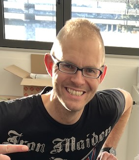
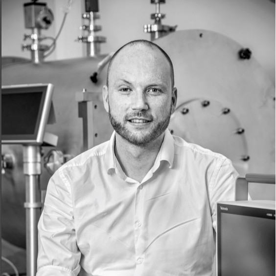
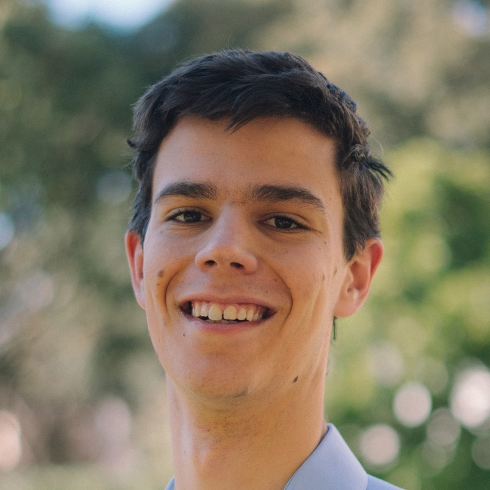
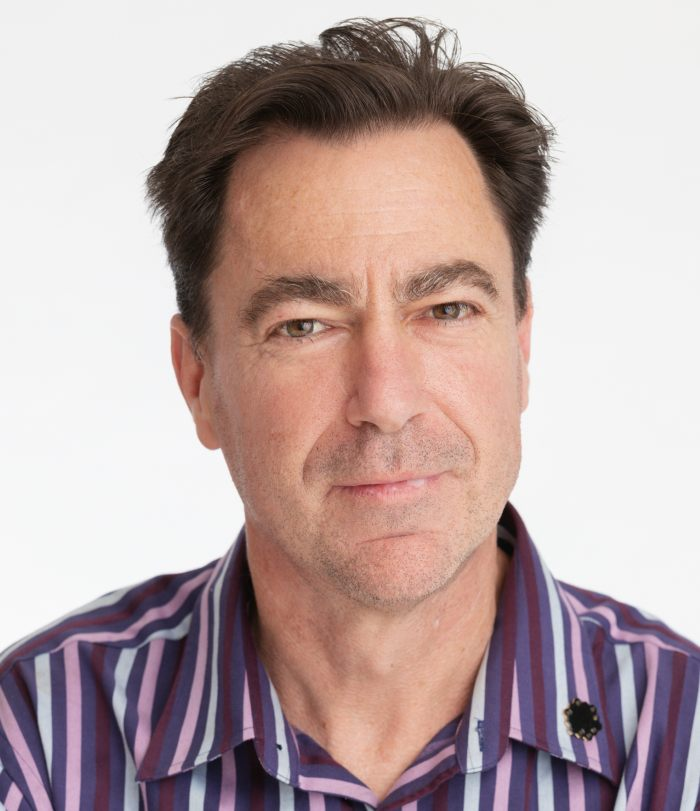
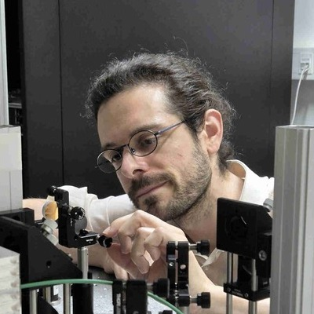

Technical Management Committee
-
Mike Ireland (ANU)
Heimdallr/Baldr/Solarstein co-lead and committee chair -

Frantz Martinache (OCA)
Heimdallr co-lead -

Denis Defrére (KU Leuven)
NOTT lead -
Stefan Kraus (Exeter)
BIFROST lead
Instrument Team - Current Phases
-

Adam Taras (Sydney)
Solarstein co-lead and Heimdallr/Baldr optomechanical engineer -
Benjamin Courtney-Barrer (ANU)
Baldr co-lead -
Sylvie Robbie-Dubois (OCA)
Senior interferometrist and instrument scientist (Heimdallr/Baldr/Solarstein) -

Peter Tuthill (Sydney)
Instrument Team -
Gordon Robertson (Sydney)
Instrument Team -
Nick Cvetojevic (OCA)
Instrument Team -
Romain Laugier (KU Leuven)
Instrument Team -

Germain Garreau (KU Leuven)
Instrument Team -
Roxanne Ligi (OCA)
Interferometrist and instrument scientist (Heimdallr/Baldr/Solarstein) -
Sébastien Morel (OCA)
Instrument Team -
Johan Morren (KU Leuven)
Mechanical engineer (NOTT) -
Kwinten Missiaen (KU Leuven)
Software engineer (NOTT) -
 Gyrogy Medgyesi (Fornax)
Gyrogy Medgyesi (Fornax)
Cryogenic mechanical design (NOTT) -
Jyotirmay Paul (Exeter)
Instrument Team -
Peter Chingaipe (KU Leuven)
NOTT Instrument Scientist -
 Owain Snaith (Exeter)
Owain Snaith (Exeter)
Instrument Team -
 Daniel Lancaster (Exeter)
Daniel Lancaster (Exeter)
Instrument Team -
 Emilie Bouzerand (ETH Zurich)
Emilie Bouzerand (ETH Zurich)
Cryostat design (NOTT) -
Gert Raskin (KU Leuven)
Instrumentation expert (NOTT) -
Muhammad Salman (KU Leuven)
Control engineer (NOTT) -
Wannes Verstraeten (KU Leuven)
Electronics engineer (NOTT) -
 Sorabh Chabra (Exeter)
Sorabh Chabra (Exeter)
Spectrograph design and construction (BIFROST)
Collaborating Scientists and previous Team Members
- Olivier Absil (University of Liège): NOTT collaborating scientist
- Azzurra Bigioli (KU Leuven): NOTT instrument scientist
- Fatme Allouche (ESO Chile): Collaborating Scientist
- Luca Casagrande (ANU): Collaborating Scientist
- Josh Carter (ANU): Project manager
- Sorabh Chhabra (Exeter): Spectrograph design
- Fred Crous (Sydney): Optomechanical Engineer
- Colin Dandumont (University of Liège): NOTT exoplanet science case
- Abigail Frost (ESO Chile): Collaborating Scientist
- Adrian Glauser (ETH Zurich): NOTT cryostat design
- Simon Gross (Macquarie): Collaborating Scientist
- Lucas Labadie (University of Cologne): NOTT photonic chip design and testing
- Stéphane Lagarde (OCA): Engineering Lead - planning phases
- Connor Langford (Sydney): Lithography consultant
- Grace McGuinness (ANU): Optomechanical engineer for Narcissus Box and Precision Alignment
- Daniel Mortimer (Exeter): Bifrost Design
- Mamadou N'Diaye (OCA): Zernike WFS consultant
- Barnaby Norris (Sydney): Seidr scientist (photonic BIFROST potential upgrade)
- Ahmed Sanny (University of Cologne): NOTT photonic chip design and testing
- Rachel Webster (Melbourne): Collaborating Scientist
Science preparation and exploitation
- Jean-Charles Augereau (IPAG): exozodiacal dust modelling
- William Danchi (GSFC): exozodiacal disk science (NOTT)
- Steve Ertel (University of Arizona): lead exozodiacal disk science (NOTT)
- Bertrand Mennesson (JPL): exozodiacal disk science (NOTT)
- Anthony Meilland (OCA): connection with OImodeller
- Kevin Ollman (Kiel): hot exozodiacal dust modelling
- Thomas Stuber (University of Arizona): exozodiacal disk science (NOTT)
- Jeremy Scott (University of Arizona): exozodiacal disk science (NOTT)